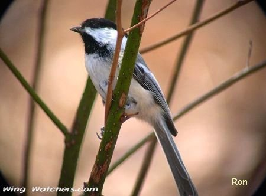

Wing Watchers.net
....
Your information center
"For People Who Love Nature" ...
Bird Photos One -- Perching Birds --- Pg.1
Home
1
2
3
4
5
6
Click on photo to enlarge. Click name for information.
Alder Flycatcher
American Crow
American Goldfinches
American Pipit
American Robin
American Tree Sparrow
Baltimore Oriole (M)
Baltimore Oriole (F)
Barn Swallow
Barn Swallow [fledge]
Black and white Warbler

Black-capped Chickadee
Black-hooded Parakeet
Blue-gray Gnatcatcher
Black-throated Green Warbler
Blue Jay
Blue-winged Warbler
Brown-headed Cowbird(M)
Brown Thrasher
Carolina Wren
Carolina Wren
Cedar Waxwing
Cedar Waxwing--fledge
Chipping Sparrow
Brown Creeper
Chestnut-sided Warbler
Eastern Kingbird
Common Yellowthroat(M)
Dark-eyed Junco
Evening Grosbeak (M & F)
Yellow-bellied Sapsucker (M)
Yellow-bellied Sapsucker (F)
Home
1
2
3
4
5
6
Top